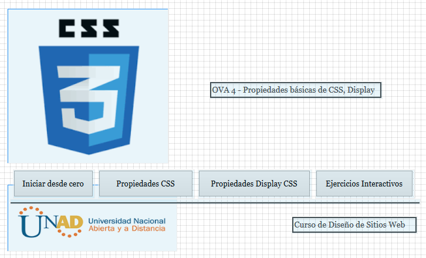

Objetivo del sitio
General
Mostrar y dar a conocer a los estudiantes que están entrando al mundo del diseño web las
propiedades básicas de CSS y Display CSS, y de este modo, las puedan empezar
a utilizar en sus proyectos web.
Especificos
- Dar a conocer los diferentes comandos CSS y Display CSS.
- Identificar las propiedades básicas de CSS y Display CSS.
- Utilizar las propiedades básicas de CSS y Display CSS.
- Explicar los escenarios o espacios donde se debe utilizar cada propiedad.
Materiales
- Logo Unad
Esta imagen contiene el logo de la UNAD, que vendría a representar el rol de cliente en el proyecto. Fuente: https://www.unad.edu.co/
- Logo CSS3
El logo del CSS3, representa el lenguaje al que pertenecen las propiedades básicas que queremos explicar, la exposición de este logo se da con la idea de dar a conocer a los estudiantes la representación gráfica de la herramienta en el mundo del desarrollo web. Fuente: https://www.pngwing.com/es/free-png-ptcbk
- Video Propiedades CSS
En este video presentado por el canal YoDevs en YouTube, se explican algunas propiedades básicas de CSS3. Así como también, se puede observar como se introducen en el código y la estructura de la pagina web. Fuente: https://www.youtube.com/watch?v=5eFJ-RA_LCA
- Video Display CSS
En este video se encuentra una explicación muy atinada y compresible del uso de las propiedades display de CSS3. El video fue realizado por el youtuber Jonathan Lifschittz para el canal JL Web. Fuente: https://www.youtube.com/watch?v=rJp3IWsk_os
Contenido
Propiedades básicas de CSS
Hoja de estilo en cascada o CSS (Cascading Style Sheets), es el lenguaje con el que se trabaja el diseño de una página web actualmente.
En CSS podemos encontrar muchas propiedades, continuación se presentan las más usadas:
Maquetación básica:
- width: Ancho de un elemento.
- width: Ancho de un elemento.
- height: Alto de un elemento.
- vertical-align: Alineamiento vertical dentro de un elemento.
- margin: Espacio que se añade entre el elemento y sus vecinos. Se puede diferencia por lado (arriba, abajo, izquierda, derecha).
- padding: Relleno interior que se añade en los bordes del A diferencia de margin, cuenta para el tamaño del elemento.
- Mueve el elemento todo lo posible hacia el lado indicado. Esta propiedad se usa en el posicionamiento flotante de CSS. El tema del posicionamiento en CSS no es trivial y conviene estudiar cómo funciona antes de usar esta propiedad.
Fuentes y texto:
- font-family: Tipo de letra
- font-size: Tamaño de letra
- font-weight: Peso (normal, negrita, …)
- font-style: Estilo (normal, cursiva, …)
- text-decoration: “Decoraciones” como subrayado, tachado, etc.
- text-align: Alineación del texto (izquierda, derecha, etc.)
- text-transform: Mostrar un texto en mayúsculas, minúsculas o la primera letra de cada palabra en mayúsculas.
Color y fondos:
- color: Color del elemento. Se puede especificar en diferentes formatos como palabras predefinidas (red, green, etc.) RGB o como valor hexadecimal.
- background-color: Color del fondo del elemento.
- background-image: Permite especificar una imagen de fondo.
- background-repeat: Permite usar una imagen a modo de mosaico en diferentes modalidades.
- box-shadow: Crear un efecto de sombra para un elemento.
Listas:
- list-style-image: Usar la imagen especificada como viñeta para la lista.
- list-style-type: Diferentes estilos de viñetas y estilos de numeración para elementos de lista.
Bordes:
- border: Añade un borde a un elemento y establece algunas propiedades (grosor, estilo de línea, etc.)
- border-color: Color del borde.
- border-style: Diferentes estilos para el borde (sólido, puntos, etc.)
- border-radius: Permite crear esquinas redondeadas para un elemento.
Propiedades Display CSS
Estas propiedades nos ayudan a definir como un elemento ocupara su espacio en la página; por ahora veremos los más comunes que son tres propiedades:
- Block: esta propiedad localiza el elemento como un bloque, es decir ocupa todo el acho de la página.
- Inline: Nos permite ubicar el elemento en línea con otros elementos.
- Inline-block: le da al elemento un comportamiento intermedio entre las propiedades inline y block, este tipo de elementos fluyen como el texto y demás elementos, como si estuvieran en línea, adicionalmente, respetan el ancho y alto de los márgenes verticales.
Maquetación

Bibliografía
Alarcón, J.M. (2015). ¿Qué diferencias hay entre display:block, inline e inline-block en CSS? Recuperado de
https://www.campusmvp.es/recursos/post/Que-diferencias-hay-entre-display-block-inline-e-inline-block-en-CSS.aspx
Lopez, B. (2020). La guía rápida para aprender CSS básico desde cero. Recuperado de
https://www.ciudadano2cero.com/aprender-css-basico-desde-cero/#Propiedades_basicas_que_deberias_conocer
YouDevs. (Productor). (2019). Explorando las propiedades y valores más populares de CSS [YouTube].
Recuperado de https://www.youtube.com/watch?v=5eFJ-RA_LCA
Lifschittz, J. (Productor). (2020). Guía sobre Display en CSS [YouTube]. Recuperado de
https://www.youtube.com/watch?v=rJp3IWsk_os
{kind=link}
{kind=link}